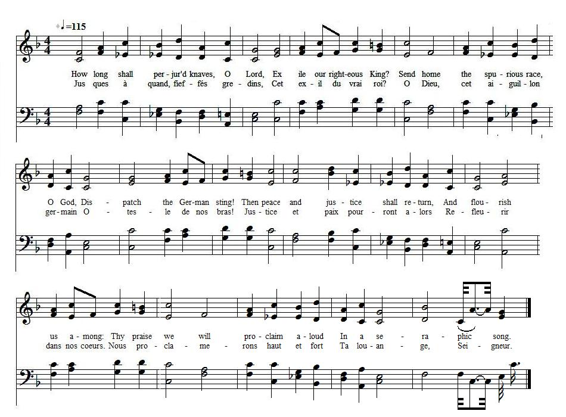
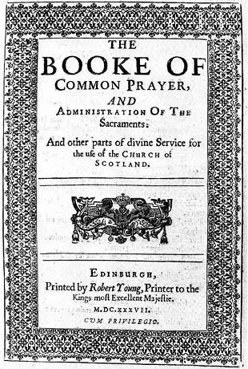

Scotland's New Psalm
Nouveau psaume pour l'Ecosse
On the Tenth of June 1736, the Chevalier's 48th Birthday
from "The True Loyalist" , page 38, 1779
Tune - Mélodie N°1"Psalm 84" from the "Scottish Psalter", harmony by J. Milton
Tune - Mélodie N°2
"Psalm 84" attributed either to McFarland or to Freeman Lewis
Sequenced by Christian Souchon
|
To the tune:
A verse translation of Psalm 84.1-8 matching the lyrics of the Jacobite Psalms appears in "Nine Psalmes done into Metre" (1645) by John Milton (? - 1694. The same Psalm inspired the Jacobite Muse with other parodies: England's New Psalm The Cameronian Cat The tune N°1 (the sound background to this page) fitting in with this text is to be found in "The Scottish Psalter", 1650, with a harmony from J. Milton. The tune N°2 is attributed to a certain McFarland in "The Beauties of Harmony", by Freeman Lewis, 1813 (and to Freeman Lewis in "Supplement to the Kentucky Harmony", by Ananias Davisson, 1820!). Milton's translation reads: How lovely are Thy dwellings fair, O Lord of hosts; how dear. The pleasant tabernacles are Where Thou dost dwell so near... |
 |
A propos de la mélodie:
Une traduction rimée du Psaume 83 1-8 (selon la numérotation de la Bible de Maredsous) se trouve chez John Milton (? - 1694) dans "Neuf psaumes en vers". Le même Psaume inspira à la muse Jacobite d'autres parodies: Nouveau psaume pour l'Angleterre Le chat Caméronien Le timbre N°1 (fond sonore de la page) qui correspond à ce texte provient du "Psautier d'Ecosse", 1650, et reprend l'harmonisation de J. Milton. Le timbre N°2 est attribué à un certain McFarland dans "Les beautés de l'harmonie" de Freeman Lewis, 1813 (et au même Lewis dans le "Supplément à l'Harmonie du Kentucky", d'Ananias Davisson, 1820!). Le texte de Milton commence ainsi: "Que tes demeures sont aimables O Seigneur des armées! Des tabernacles délectables Où tu sièges si près... |

|
SCOTLAND'S NEW PSALM
June 10th, 1736 (The Chevalier de Saint George's 48th birthday) 1. How long shall perjur'd knaves, O Lord, Exile our righteous K[in]g? Send home the spurious race, O God, Dispatch the German sting: Then peace and justice shall return, And flourish us among: Thy praise we will proclaim aloud In a seraphic song. 2. How long shall righteous Jacob grieve, To see his people's fate, Oppress'd with bondage and the woes Of an imperish'd state? O Pow'r Eternal! hear my sighs, And grant me this request, Let him whose right it is to reign In place of horned beast. 3. Wait thou with patience, O my soul! 'Till God thinks fit to smile; With Jacob's blessings them he will Our sorrows all beguile. Let brightness crown the happy day, That gave our Monarch birth: Let loyal souls chear drooping hearts With gladsome acts of mirth. Source: "The True Loyalist; or, Chevaliers's Favourite: being a collection of elegant songs, never before printed. Also several other loyal compositions, wrote by eminent hands." Printed in the year 1779. |
 |
LE NOUVEAU PSAUME DE L'ECOSSE
Le 10 juin 1736 (48ème anniversaire du Chevalier de Saint-Georges) 1. Jusques à quand, fieffés gredins, Cet exil du vrai roi? O Dieu, cet aiguillon germain Ôte-le de nos bras! Justice et paix pourront alors Refleurir dans nos cœurs. Nous proclamerons haut et fort Ta louange, Seigneur. 2. Jacques, combien de temps encor Ton cœur juste peut-il Nous voir accablés par le sort Et l'Etat en péril? Eternel, écoute ma voix Et au destin ordonne Qu'il laisse régner qui de droit Non, une bête à cornes. 3. De patience il te faut t'armer, Mon âme, et tu verras Dieu bénir Jacques, consoler Tous nos maux ici-bas. La joie marque ce jour heureux Où ce Prince naquit! Les cœurs loyaux soient courageux En souvenir de lui! (Trad. Christian Souchon (c) 2011) |